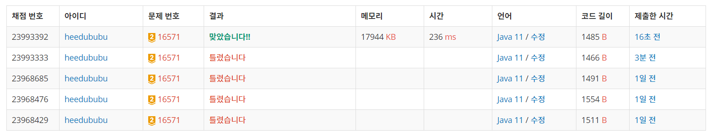

👀 문제
https://www.acmicpc.net/problem/16571
👊 도전
1. 설계
- map에서 0 개수가 홀수면 1부터, 짝수면 2부터 시작한다.
- game()에 누구 차례인지 나타내는 now와 배열 map을 넘겨줘서 게임을 진행한다.
- 0인 위치를 찾고, now가 그 자리를 선택하는 경우와 아닌 경우로 나눠서 문제를 푼다.
- 선택한다면 (i, j)에 now를 넣고 isWin()으로 이기는 지 체크한다.
- game() 재귀 호출로 다음 게임으로 넘어간다.
- 재귀 복귀 후에는 (i, j)=0으로 초기화하여 선택하지 않는 경우를 생각한다.
2. 구현 (성공 코드)
1
2
3
4
5
6
7
8
9
10
11
12
13
14
15
16
17
18
19
20
21
22
23
24
25
26
27
28
29
30
31
32
33
34
35
36
37
38
39
40
41
42
43
44
45
46
47
48
49
50
51
52
53
54
55
56
57
58
59
60
61
62
63
64
65
66
67
68
import java.util.*;
import java.io.*;
/**
* @author HEESOO
*
*/
class Main {
public static void main(String[] args) throws IOException {
BufferedReader br=new BufferedReader(new InputStreamReader(System.in));
StringTokenizer st;
int[][] map=new int[3][3];
int zero=0; // 맵에서 0개수 카운트
for(int i=0;i<3;i++) {
st=new StringTokenizer(br.readLine());
for(int j=0;j<3;j++) {
map[i][j]=Integer.parseInt(st.nextToken());
if(map[i][j]==0) zero++;
}
}
// 0이 홀수면 1, 짝수면 2부터 시작
int win=game(zero%2!=0? 1:2, map);
char answer;
if(win==1) answer='W';
else if(win==0) answer='D';
else answer='L';
System.out.println(answer);
}
public static int game(int now, int[][] map) {
int min=2; // 상대방의 최선의 승패를 저장
for(int i=0;i<3;i++) {
for(int j=0;j<3;j++) {
if(map[i][j]==0) { // 놓을 수 있는 위치
map[i][j]=now; // 여기에 now가 놓는다
// (i,j)에 놓을 때 내가 이길 수 있는 경우라면 상대방은 지므로 -1
if(isWin(now, map)) min=Math.min(min, -1);
// 다음 차례를 재귀로 호출후 그 결과를 min에 저장
min=Math.min(min, game(now==1? 2:1, map));
// 내가 (i, j)에 놓지 않는 경우
map[i][j]=0;
}
}
}
// min은 상대방의 승패를 저장한 것이므로 나의 승패는 반대로 리턴해줘야 함
if(min==1) return -1;
else if(min==0 || min==2) return 0;
else return 1;
}
public static boolean isWin(int now, int[][] map) { // 현재 map에서 now가 이길 수 있는가를 T/F로 리턴
for(int i=0;i<3;i++) {
if(map[i][0]==now && map[i][0]==map[i][1] && map[i][1]==map[i][2]) return true;
}
for(int j=0;j<3;j++) {
if(map[0][j]==now && map[0][j]==map[1][j] && map[1][j]==map[2][j]) return true;
}
if(map[0][0]==now && map[0][0]==map[1][1] && map[1][1]==map[2][2]) return true;
if(map[0][2]==now && map[0][2]==map[1][1] && map[1][1]==map[2][0]) return true;
return false;
}
}
3. 결과
 🤟 성공 🤟
4. 설명
- map을 생성하고, 누구부터 시작하는지 판별하여 game()을 호출한다
- map을 만들 때 0의 개수를 카운트하여 0이 홀수면 1부터, 짝수면 2부터 game()을 호출한다.
- game()은 int형을 리턴하는데, 이때 리턴 값은 처음 시작한 사람이 이긴다면 1, 무승부면 0, 지면 -1을 가지고 돌아온다.
- 재귀로 모든 경우를 체크한다
- game()의 리턴값은 now의 승패를 리턴한다.
- min은 상대방의 승패를 저장한다.
- 최선의 승패를 리턴해야 하므로 now가 지는 것은 피해야 한다.
- 따라서 min은 상대방의 승패이므로 상대가 지는게 가장 좋고, 다음은 비기고, 마지막은 이기는 것이다. 즉, min의 우선순위가 -1, 0, 1 순이므로 Math.min()을 이용한다.
- 이중 for문으로 맵을 순회한다. 0인 곳을 찾아서 이곳에 now을 놓을지 말지 체크해야 한다.
- 처음은 놓는다고 가정한다(map[i][j]=now).
- 놓고 난 다음 isWin()으로 now의 승패를 체크한다. 이긴다면 min에 -1을 넣는다. 왜냐면 내가 이긴다면 상대방은 지니까 -1.
- 다음 map[i][j]=now로 변경된 map을 가지고 game() 재귀 호출로 상대방 차례로 넘어간다. game()의 리턴값 역시 min에 넣는다.
- map[i][j]=0은 (i, j)에 now가 놓지 않는 경우이다.
- for문을 다 돌고 나면 now의 승패를 리턴한다. min을 보고 나의 승패를 넘긴다.
- min은 -1, 0, 1 값을 가지며 여기에 따라 now의 승패를 넘기면 된다.
- 또한, min은 2로 초기화했기 때문에 map에 0이 없다면 갱신이 일어나지 않는다. 이 경우는 map이 꽉찼고, 현재 재귀 호출 전에서 isWin()으로 이긴 사람이 없다는 뜻이므로 무승부인 0을 리턴한다.
- isWin()으로 map에서 now가 이기는지 확인한다
- 첫 번째 for문은 세로로 빙고를 만든 경우이다.
- 두 번째는 가로.
- 첫 번째 if문은 우측하단 방향으로 대각선, 다음 if문은 우측상단으로 대각선이다.
- 총 4가지의 경우 중 하나라도 만족하면 true를 리턴한다.